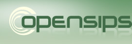

Partners


Organizers


OpenSIPS (Open SIP Server) is a mature open source implementation of a SIP (Session Initiation Protocol) proxy/router which includes various application-level functionalities like SIP Registrar, SIP Proxy, SIP Presence Agent and SIP Back to Back User Agent. OpenSIPS, as a SIP server, can be used as the core component of any SIP-based VoIP solution. With a very flexible and customizable routing engine, OpenSIPS unifies voice, video, IM and presence services in a highly efficient way, thanks to its scalable (modular) design.
OpenSIPS is mostly used today by Internet Service providers and Telecom companies to provide SIP services to residential and small to medium business markets, the deployment
Brief Description
The Short Message Peer-to-Peer (SMPP) in telecommunications is an open, industry standard protocol designed to provide a flexible data communication interface for the transfer of short message data between External Short Messaging Entities (ESME), Routing Entities (RE) and Message Centres.
Expected Results
The goal of this project is to create a OpenSIPS module that is able to communicate with a SMPP gateway. In other words, to create a new module that provides SIP to SMPP message translation.
First steps: Start User Documentation
Required knowledge